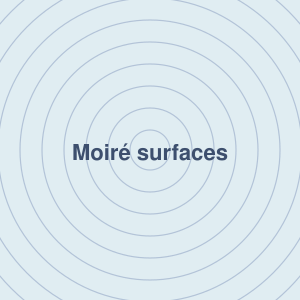
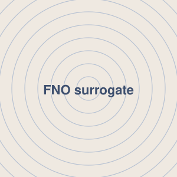
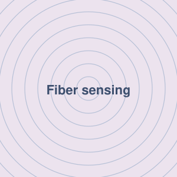

Research
Theory and inverse design in nanophotonics. Click a project for details.

Preconditioning Dynamics of Resonant Inverse Design
Ongoing research
Stanford University · Fan Group · 2026
High-Q resonant inverse design is notoriously ill-conditioned. Using temporal coupled-mode theory, I reduce the optimization to a two-dimensional physical state that separates resonance detuning from useful enhancement, and show that the familiar O(Q²) stiffness is not intrinsic to the objective but is introduced by the design parameterization. The reduced dynamics have an exact phase structure, which explains why reparameterization, not learning-rate tuning, is the right lever.

Bound States in the Continuum in High-Dimensional Shape Space
Paper in preparation · co-first author
Stanford University · Fan Group · 2026 – present
I derive how the Q factor of a quasi-BIC scales along an arbitrary path through geometry space: the exponent is set by the order of contact between the path and the radiation-zero set, giving Q ∼ |δ|−2μ. Using this law as a search criterion, I locate symmetry-unprotected accidental BICs and show that exact BICs form connected constraint manifolds in high-dimensional shape space, which can be navigated to tune near-field superchirality while staying bound.

Selective Excitation of Higher-Order Hyperbolic Phonon-Polaritonic Modes
Paper in preparation · co-first author
KAIST · Quantum Nano Optics Lab
I develop an analytic mode-matching framework, based on the transfer-matrix method, that captures conversion among image-polariton, phonon-polariton, and radiation modes at metal discontinuities. Combined with an adjoint optimization framework I built on the COMSOL API, I inverse-design an Au grating beneath hBN that selectively excites a desired higher-order hyperbolic phonon-polariton mode, and am validating the design with SNOM experiments.

Analytical and Inverse Design Framework for Moiré Fourier Photonic Surfaces
Ongoing research
KAIST · Quantum Nano Optics Lab
I develop a Floquet–Fourier framework for computing polaritonic band structures of conductivity-modulated Fourier surfaces and commensurate moiré superlattices. Making the band-structure model differentiable turns the search for a complete global bandgap into an eigenmode inverse-design problem, by mapping band-edge eigenstates to reciprocal-space scattering channels and optimizing symmetry-adapted harmonics for cavity formation.
Fundamental Limits of Tunable Nanophotonic Devices and Photonic Time Crystals
Ongoing research
KAIST · Quantum Nano Optics Lab
I apply a Maxwell-constrained QCQP framework to bound the achievable performance of thermo-optically tunable metasurfaces with 3D diffraction-order control, asking whether inverse-designed devices are already near a limit set by materials and design space. I then extend the framework from binary spatial metasurfaces to binary photonic time crystals, deriving bounds on momentum-bandgap width and Floquet amplification rate under bounded modulation.
Inverse Design of Nanophotonic Color Router Robust to Oblique Incidence
Adv. Opt. Mater. 2026 · co-first author
KAIST · Quantum Nano Optics Lab
Nanophotonic color routers can replace absorptive color filters in CMOS image sensors, but designs optimized for normal incidence degrade severely when light arrives at an angle. Using large-scale adjoint-based inverse design across multiple incident angles and wavelengths, I designed a freeform color router that keeps about 78% optical efficiency within ±12°, and addressed inter-pixel crosstalk within the same framework.

Fourier Neural Operator Surrogate Solver for Freeform Metamaterials
Research project
KAIST · Quantum Nano Optics Lab
I implemented a Fourier Neural Operator–based deep network that predicts the electromagnetic field distribution of freeform metamaterials across a broad wavelength range, replacing repeated full-wave simulations. Using the trained surrogate, I built an inverse-design framework for diverse device functionalities.

Shape Sensing of Multimode Optical Fiber via Neural Network
Visiting research · Summer 2025
Harvard Medical School · Wellman Center · Bouma Lab
I trained a CNN-based network to predict the shape of a multimode optical fiber from sparse transmission-matrix data, achieving over 98% prediction accuracy for a 1 m fiber, and analyzed how fiber length and the number of shape degrees of freedom affect predictability.